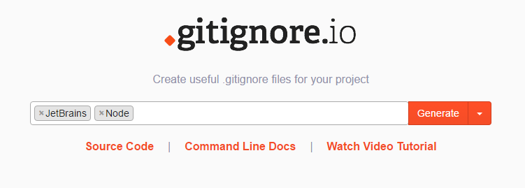
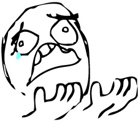

Là những Dev bá đạo chúng ta đều biết đến Git để quản lý source code. Và thỉnh thoảng khi làm việc trong 1 team bạn hay gặp trường hợp 2 ông hay cả team suốt ngày bị xung đột mợt lên mợt xuống vì mấy file rác như file biên dịch, log, config, bờ la bờ la. Và thế là Gitignore đã ra đời để giải quyết vấn đề đó.
Gitignore là gì?
Gitignore là file có tên là .gitignore do thằng Git quy định, nhiệm vụ của nó là liệt kê những file mà mình không mong muốn cho vào git hoặc hiểm nôm na là thằng Git sẽ lờ những file đó đi.
Cách thức hoạt động
Khi add 1 file mới vào git, git sẽ kiểm tra danh sách những thằng sẽ lờ đi trong file .gitignore và lờ luôn chúng nó. À đó mới chỉ là điều kiện cần, điều kiện đủ là nó không có trong git cache nữa thì thằng git nó mới lờ đi chứ nó mà nằm trong git cache thì .gitignore sẽ vô tác dụng.
Các pattern format hay dùng
- Sử dụng # để comment và có thể để cách dòng cho dễ đọc.
- Đơn giản nhất là tên file cần ignore: example.exe
- Hay cả thư mục: example_folder/
- Khi ignore thư mục nên có dấu / ở sau tên thư mục để nhận biết đó là thư mục, nếu không nó có thể là coi là thư mục hoặc file hay symbolic link.
- Dấu ! phía trước có ý nghĩa phủ định: !abc/example.exe
- Sử dụng 1 * để tìm các file có cùng định dạng. Ví dụ như bạn muốn ignore tất cả các file .xml trong project: *.xml
- Trường hợp khác của 1 * nếu bạn chỉ rõ đường dẫn ví dụ: config/*.xml thì nó chỉ có hiệu lực cho các file config/abc.xml mà không có hiệu lực cho các file config/sub/abc.xml.
- Sử dụng ** để có hiệu lực cho các thư mục không cần định rõ tên. Ví dụ: **/foo nó sẽ có hiệu lực cho tất cả file hoặc thư mục có tên là foo ở mọi nơi trong project.
- Hay sử dụng kiểu folder/** để có hiệu lực cho tất cả các file bên trong thư mục.
Tools
À thì công nghệ hiện đại rồi nên ta cũng không phải vật lộn bằng tay nữa mà hầu hết các IDE đều hỗ trợ, nếu chưa có bạn có thể cài đặt thêm plugin hay config ở đâu đó. Mình có thể chọn loại dự án mình đang làm và nó sẽ sinh tự động file .gitignore tương ứng.
Hoặc đơn giản bạn vào gitignore.io sau đó chọn loại project mình đang làm. Ví dụ như mình đang dùng WebStorm (của Jetbrains) và code Node.js:

Sau đó nó sẽ tạo ra 1 file .gitignore ngon lành cho bạn. Ví dụ như 1 project Node.js nó sẽ kiểu như thế này:
### Node template # Logs logs *.log npm-debug.log* # Runtime data pids *.pid *.seed # Directory for instrumented libs generated by jscoverage/JSCover lib-cov # Coverage directory used by tools like istanbul coverage # nyc test coverage .nyc_output # Grunt intermediate storage (http://gruntjs.com/creating-plugins#storing-task-files) .grunt # node-waf configuration .lock-wscript # Compiled binary addons (http://nodejs.org/api/addons.html) build/Release # Dependency directories node_modules jspm_packages # Optional npm cache directory .npm # Optional REPL history .node_repl_history
Phạm vi phủ sóng
File .gitignore sẽ ảnh hưởng đến các file và thư mục anh em với nó hoặc là con cháu, chắt của nó. Thường thì project chỉ cần 1 file .gitignore ở ngoài cùng là đủ nhưng nếu project quá lớn ta có thể tách file .gitignore vào từng folder nhỏ để dễ quản lý.
Khi nào lên dùng Gitignore?
Bất cứ project nào cũng nên dùng nó, bạn nên tạo ngay file .gitignore trong thư mục gốc ngay khi khởi tạo project của bạn và liệt kê luôn những file mà bạn muốn git bỏ qua (lờ đi). Tại sao phải liệt kê trước làm gì thế? Đọc phần dưới sẽ rõ :D
Đời không như là mơ
Giả dụ thế này! Bạn vừa join vào project và thấy project suốt ngày bị conflict vì mấy file rác nhưng may quá bạn đọc được bài viết này và bạn rất thông minh nên đã tạo luôn file .gitignore cho project và thêm luôn file rác đó vào .gitignore rồi bạn xóa file rác đi và commit lên. Rồi sao! 1 ông khác lại pull code mới về lại tạo ra file rác đó và nó vẫn dính vào git bình thường. Đờ heo? "Em cho nó vào .gitignore rồi cơ mà?.

Vì sao à? Vì file đó đã được thằng git cache thu nạp thành đồ đệ của nó rồi nên thằng git nó vẫn có quyền quản lý file đó. Vậy cách giải quyết đơn giản nó phải giải thoát file đó ra khỏi git cache là xong, bằng 1 dòng lệnh thần thánh:
git rm -r --cached /path/to/file_or_folder
Từ bây giờ file đó không còn là đồ đề của git cache nữa nên nó không thuộc quyền quản lý của git nữa và bây giờ .gitignore mới có tác dụng. Theo lý thyết là vậy nhưng nếu bạn cần reset lại hết project để .gitignore hoạt động đúng thì mình thường xóa bỏ hết đồ đệ của git cache luôn :D
git rm -r --cached .
Sau đó mình sẽ add tất cả các file lại vào project như lúc mới tạo project.
git add .
Và bây giờ bạn lại **commit **và push như chuyện bình thường ở huyện.
Kết luận
Ừm thì bài này chả có gì để kết luận cả :)) Bạn cứ áp dụng thử vào dự án của bạn đang làm rồi xem nó quan trọng hay không nhé :D